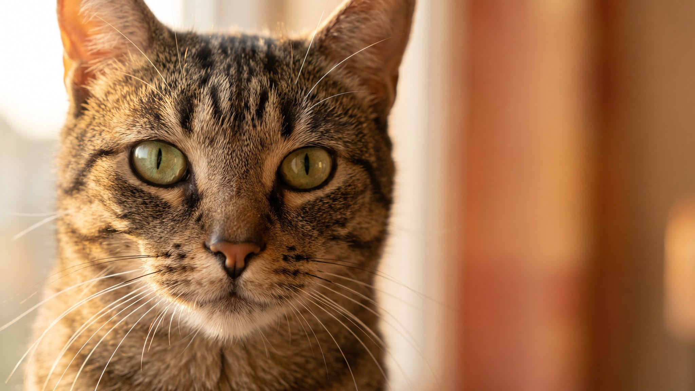

Каждая вторая домашняя кошка в России весит больше нормы, а хозяин об этом не догадывается, пока не встаёт на весы вместе с ней. Лишний вес у кошек работает тихо: не больно, не заметно, но суставы изнашиваются быстрее, сердце нагружается сильнее, а жизнь по статистике укорачивается на 2-3 года. Пять простых тестов, которые можно провести прямо сейчас, покажут, стоит ли начать наблюдение.
🐾 Не уверены, что с кошкой всё в порядке?
Опишите симптом в AnimaLife или пришлите фото — AI-ветеринар за минуту скажет, можно ли наблюдать дома или ехать к врачу сегодня. Бесплатно, круглосуточно, без записи.
Проверить симптом → Проверить в MAX →
У вас iPhone? AnimaLife есть в App Store
Положите руки на бока кошки и слегка надавите пальцами. Рёбра должны прощупываться без усилий, как костяшки пальцев на сжатом кулаке. Если приходится давить, чтобы их почувствовать, жировой слой уже избыточный. Если рёбра выпирают без прощупывания, кошка, наоборот, худее нормы.
Встаньте над кошкой и посмотрите вниз, когда она стоит. За рёбрами, перед тазом, должен быть лёгкий перехват, «талия». Силуэт от шеи к хвосту должен напоминать мягкую восьмёрку, а не прямоугольник или овал. Если бока выпирают за линию рёбер или перехвата нет совсем, это сигнал набирающегося лишнего веса.
Живот кошки в профиль должен быть слегка поджат. Небольшой «провис» снизу, ближе к задним лапам, называется жировым фартуком; у многих кошек он есть от природы и сам по себе нормален. Важно другое: если фартук становится заметно больше за несколько месяцев или мешает кошке ходить, это повод взвеситься и обсудить с ветеринаром.
Кошка, набирающая лишний вес, обычно меньше играет: запрыгнуть на диван уже труднее, прыжки становятся короче. Ещё один характерный признак: кошка перестаёт нормально вылизывать зад и хвост. Не потому что ей лень, а потому что физически тяжело дотянуться. Заметили эти изменения в паре с растущим животом? Стоит начать следить за весом регулярно.
Встаньте на весы сами, запомните цифру. Потом встаньте снова, держа кошку. Разница и есть её вес. Записывайте раз в месяц. Плавный рост на 100-200 г за месяц без болезни или беременности: повод скорректировать питание. Резкий скачок или, наоборот, резкая потеря веса: повод к ветеринару.
🐾 Проверьте свою кошку, пока помните
Откройте AnimaLife, опишите, что беспокоит, — получите разбор и понятный план действий. Ответ за минуту, бесплатно и без очередей.
Спросить AI-ветеринара → Спросить в MAX →
У вас iPhone? AnimaLife есть в App Store
🐾 Понравился разбор?
Подпишитесь на канал — каждый день разбираем по одному тревожному симптому у кошек и собак: что в пределах нормы, а когда пора к врачу. Подпишитесь, чтобы не пропустить разбор, который может спасти здоровье вашего питомца.
Материал носит информационный характер и не заменяет очную консультацию ветеринара.